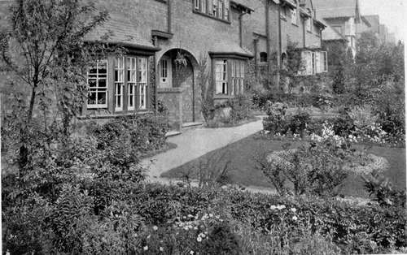
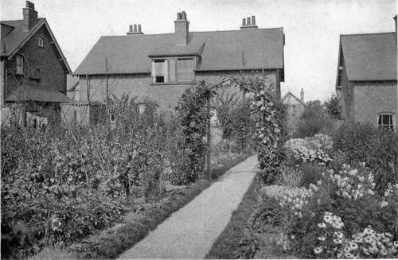
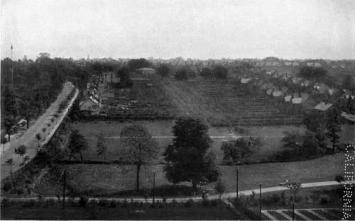

Chapter XIII. Garden Cities
Description
This section is from the book "What England Can Teach Us About Gardening", by Wilhelm Miller. Also available from Amazon: What England Can Teach Us About Gardening.
Chapter XIII. Garden Cities
We can build small, new cities that are practically perfect, without philanthropic aid, simply by cooperation, and these cities may revolutionize the old ones.
THE most perfect city I have ever seen or heard of is the famous "Garden City" Of Bournville, A Suburb Of Birmingham, England. I was simply transported by the healthfulness, happiness, and beauty of the place, and I believe it gives the people more for their money than any other city on earth. Any one who has cherished some noble vision of a glorified humanity would be intensely interested to see Bournville, for part of Bellamy's "Looking Backward" is here realized.
Can you imagine yourself living four miles from a city the size of Pittsburg in a suburban town of about three thousand inhabitants, where there are no saloons and never can be any slums, noise, dirt, crowding, factory smells, bill boards, or streets torn up for gas-lighting, or sewers ? Wouldn't you like a chance to play golf, tennis, cricket, bowls, or hockey under ideal circumstances at a cost of a few cents a day? Wouldn't you be satisfied with the social life of a community that has splendid schools, churches, baths, gymnasium, meeting-house, and one tenth of its whole area given up to parks and playgrounds? Wouldn't you feel safer in a city where the national birth-rate has been doubled and the death-rate cut in two? And what would you say to a handsome brick house of seven rooms and a bath, with an eighth of an acre already planted with fruit trees, vines, and lawn, at a rental of twelve dollars and thirty cents a month?
How can such superb opportunities be given at so low a cost? There are three ways, each of which is exemplified by a different garden city in England. The first is the plan of Lever Brothers, soap manufacturers, who built Port Sunlight, a suburb of Liverpool at a cost of #1,700,000. It is the most beautiful of all, has the greatest variety of buildings for social purposes, and the cheapest rents, but it has two serious drawbacks. First, the social life of a community having only one interest is not as healthy as that of a mixed community. The renters at Port Sunlight are all employees of the same factory, and the magnificent social features provided for their comfort and pleasure are not used as much as they ought to be. Second, the city has never paid its makers any direct dividend, although it is practically self-supporting. The Levers firmly believe that they have received an ample financial return in the increased efficiency of their employees. But we cannot expect that the city life of the world will be revolutionized by kind-hearted manufacturers. Port Sunlight is superb, but its plan implies too great an investment for the ordinary manufacturer and the returns are too indirect to appeal to the average business man.
Both of these defects are remedied in the plan of Bournville, which was founded by Mr. George Cadbury, the cocoa manufacturer. In the first place, only 41 per cent, of the renters at Bournville are employees of the factory. The others came from anywhere and everywhere, and many of them spend their days in Birmingham. Consequently the social life is that of normal, mixed community — not merely industrial or suburban. In the second place, Bournville really pays. The city's chief source of income is rent. Everybody pays 8 per cent, on the investment actually made in his house and lot. The city's income doubles every five years (it is now fifteen years old), and in fifty years, at this rate, it will have an annual income of about #5,000,000. And since it will never have to pay back Mr. Cadbury's gift of about #775,000, the city will have a large sum available for building other cities like Bournville.
EVERY FRONT YARD IN BOURNVILLE (NEAR BIRMINGHAM) IS AS GOOD AS THIS. EVERY HOUSE HAS A DIFFERENT DESIGN FOR ITS GARDEN AND A DIFFERENT SET OF CLIMBERS. THE ESTATE PLANTS THE TREES, HEDGE, VINES, LAWN AND FRUIT TREES. THE RENTERS DO THE REST. See page 140.
EVERY BACK YARD IN BOURNVILLE IS AS NEAT AND PRODUCTIVE AS THIS. NINETEEN GARDENS, AVERAGING 37 X IOO FEET EACH, PRODUCED FRUIT AND VEGETABLES WORTH #23.45 EACH, AN AVERAGE OF #.45 A WEEK THROUGHOUT THE YEAR. THIS IS AT THE RATE OF #278.25 AN ACRE.
EVERY BACK YARD IN BOURNVILLE IS FULL OF FRUITS, VEGETABLES AND FLOWERS. THE BELT OF DWARF FRUIT TREES SHOWS IN THE MIDPLE OF THE PICTURE. TALL (OR STANDARD) FRUIT TREES ARE OUT OF DATE IN CITIES. See page 139.
The most important idea in all these garden cities is that represented by Letchworth, a suburb of London, which is thirty-four miles north of the metropolis, but reached by the best trains in less than an hour. For Letchworth has shown how we may build cities fully up to the Bournville standard without depending on magnificent gifts. When I saw Letchworth in 1908, the city was less than five years old, yet it had a population of 6,000 and there were twenty-one factories. It comprises 3,818 acres, of which 2,500, or 65 per cent., are perpetually reserved for an agricultural belt. Thus, the people of Letchworth will always be sure of a broad, restful country scene, even if London should build up solidly around the'city. Moreover, they will derive a profit from this land, because it will be rented to market gardeners and dairymen. This unique feature is wholly in addition to the regular park system, for 200 acres, nearly one sixth of the town site, are devoted to public parks and playgrounds, including an eighteen-hole golf course.
Continue to:
Tags
garden, flowers, plants, England, effects, foliage, gardening